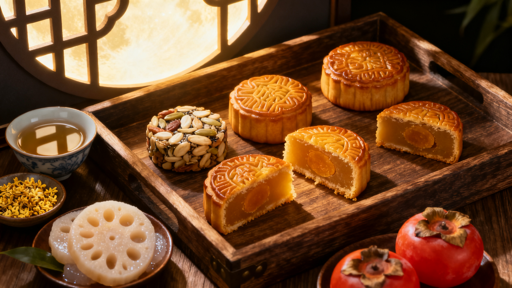

中秋节始于唐朝初年，盛行于宋朝，至明清时已成为与春节齐名的中国传统节日之一。中秋节以月之圆兆人之团圆，寄托思念故乡、思念亲人之情，祈盼丰收、幸福。中秋节自古便有祭月、赏月、吃月饼、玩花灯等民俗。
中秋节源自上古时期的天象崇拜和祭月活动，由秋夕祭月演变而来。普及于汉代，定型于唐代。中秋节自古有祭月、赏月、吃月饼等民俗。北宋时期，八月十五正式定为中秋节。明清时期，中秋节已成为与春节齐名的重要节日。
月饼是中秋节的绝对主角，起源于唐代，发展至今已形成广式、苏式、京式、滇式等流派。常见馅料有莲蓉蛋黄、五仁、豆沙、鲜肉等。此外，中秋还有吃柚子（谐音"佑子"）、喝桂花酒、吃田螺（广东）等习俗。
苏轼《水调歌头》：明月几时有，把酒问青天。不知天上宫阙，今夕是何年。我欲乘风归去，又恐琼楼玉宇，高处不胜寒。起舞弄清影，何似在人间。
